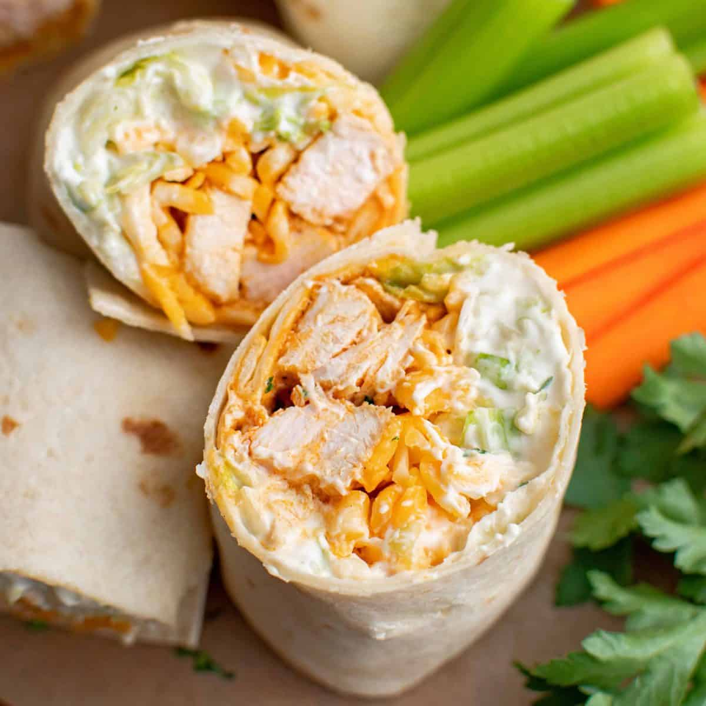

Buffalo Chicken Wrap

Description
This easy buffalo chicken wrap recipe is the perfect quick dinner or easy lunch for your family. Tender buffalo chicken is layered in a tortilla with crunchy vegetables, creamy dressing, and blue cheese!
Ingredients
- Pinch of salt
- 1/2 avocado, sliced
- 4 large flour tortillas
- 1/2 teaspoon paprika
- 2 tablespoons olive oil
- 1/2 cup carrot, shredded
- 1/2 cup Frank's Hot Sauce
- 1/2 teaspoon garlic powder
- 1/2 cup shredded cheddar cheese
- 2 cups Romaine lettuces, chopped
- 1/2 cup Blue cheese or Ranch dressing
- 1 pound boneless skinless chicken breasts
Instructions
- Prepare chicken: Slice chicken breast into several long, thin strips.
- Prepare sauce: In a small bowl, whisk together olive oil, hot sauce, paprika, garlic powder and salt.
- Mix: Add chicken and allow to marinate for at least 10 minutes (or up to 6 hours).
- Cook marinated chicken: In a large non-stick skillet over medium-high heat, add the chicken strips. Cook until no longer pink, about 4-5 minutes.
- Prepare tortilla: Meanwhile, place tortillas on a plate and spread with a thin layer of bleu cheese or ranch dressing. Layer with lettuce, carrots, avocado, and cheese.
- Final:Arrange a few chicken strips down the center of each tortilla. Wrap tightly, like a burrito. Serve with a side of hot sauce or extra dressing, if desired!